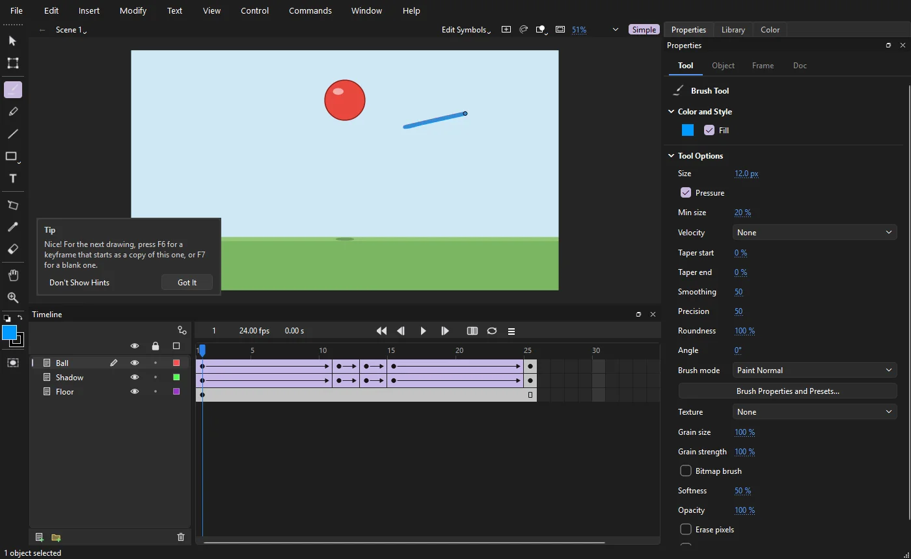
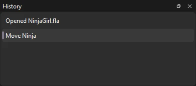
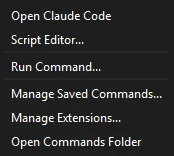
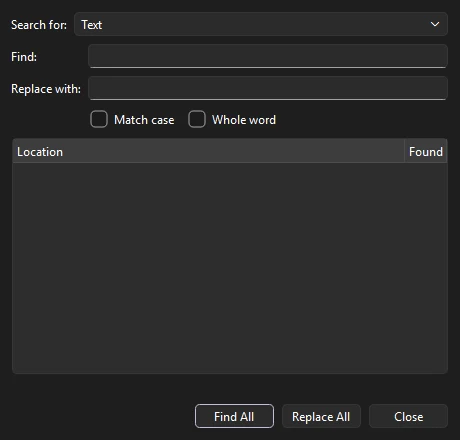
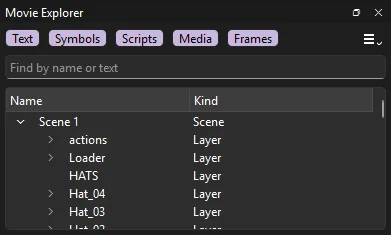

Workspace
The workspace
Phoenix keeps the stage in the middle and everything that acts on it around the edges. This page names each area and the panels you can open.

- Menu bar: File, Edit, Insert, Modify, Text, View, Control, Commands, Window and Help.
- Tools panel: drawing and editing tools, the stroke and fill colors, and the Object Drawing switch.
- Edit bar: where you are in the document (the scene, and any symbol you have opened), with a Back button; the scene name drops down to switch scenes, add, duplicate or delete one, or open the Scene panel; and the Edit Symbols list, then the stage controls: Center Stage, Rotation, whether content outside the stage is shown, dimmed or clipped, and the zoom box with its magnification menu. When more than one document is open, their tabs sit above it; right-click a tab to close it or others, copy its path, or move it to a window of its own (see Several documents).
- Stage: the visible area of your animation, on a gray pasteboard where you can park artwork off screen.
- Timeline header: the current frame, frame rate and time, the playback controls, onion skinning and looping.
- Layers: the layer stack, with visibility, lock and outline controls.
- Frame grid: the frames of every layer over time.
- Panel dock: Properties, Library, Color and Swatches as tabs, with room for more panels.
The Tools panel
The Tools panel starts as a column on the left. Related tools share a slot: a small corner mark on a button means there is more than one tool in it. Press and hold the button to see the others, and the one you pick takes over the slot. Every tool's shortcut key works even while its tool is hidden in a slot.
The tools flow to fill the panel. Drag its edge to make it wider and they arrange themselves in as many columns as fit; dock it along the top or bottom of the window and they run in rows instead. When the window is too short for every tool in the columns you chose, the panel adds columns so none is cut off, and goes back to your columns when there is room again; along the top or bottom it adds rows the same way. Drag the row of grip dots at its end to move the panel, or double-click the grip to float it or dock it again.
To rearrange the tools, choose , or right-click the Tools panel and choose Edit Toolbar.... Drag a tool into a slot to group it there, between slots to give it a slot of its own, or under Hidden to take it off the panel; a hidden tool still works by its key. The first tool in a slot is the one shown. Add Line adds a divider between sections, and Reset puts back Phoenix's own layout.

Below the tools are:
- The stroke and fill colors, as two overlapping squares: the fill a solid square at the top left, the stroke a square ring at the bottom right. Click one to bring it to the front and choose its color, including its transparency. A red line across one means no fill or no stroke.
- Black and white, which resets to a black stroke and white fill, and Swap colors, which exchanges the stroke and fill colors. In one column they sit in a row above the squares; wider, the squares grow and the two buttons take the corners beside them.
- Object Drawing (J), which decides whether new shapes merge with what is under them. See Merge and object drawing.
Hold Ctrl with any tool to use the Selection tool for a moment. See Drawing tools for every tool and its options.
The Properties panel
The Properties panel shows settings for whatever you are working on. It has four tabs, and Phoenix switches between them for you:
- Tool
- Options for the current tool, plus the fill and stroke it will draw with. Shown when you pick a tool.
- Object
- Position, size, color and effects of the selection. Shown when you select something on the stage.
- Frame
- The label, tween, ease and sound of the frame under the playhead. Shown when you click in the frame grid.
- Doc
- Stage size, frame rate and stage color. Shown when nothing is selected with the Selection tool.


Hot text
Every number you can change in Phoenix, in the panels and in dialogs alike, is hot text: an underlined value you drag across to scrub, or click to type into.
| Do this | To |
|---|---|
| Drag left or right | Scrub the value |
| Shift while dragging | Change it ten times faster |
| Ctrl while dragging | Change it in tenths, for fine adjustment |
| Click, type, Enter | Enter an exact value. In a dialog, Enter also presses its main button, such as OK |
| F2 | Start typing into the value you have tabbed or clicked to |
| Esc while typing | Cancel and keep the old value |
| Tab | Move to the next value, ready to type |
| ↑ ↓, or the mouse wheel | Step the value up or down (Page Up and Page Down step ten times as far). The wheel only changes a value you have clicked or tabbed into, so scrolling a panel never changes one by accident |
Every change made in the Properties panel is a single step you can undo.
Other panels
Every panel opens from the Window menu, which ticks the ones that are open. Choosing an open panel that is in view closes it; choosing one that is closed, or hidden behind another tab, brings it to the front. The keys work with the menu closed too.

| Panel | Key | Use it to |
|---|---|---|
| Timeline | Ctrl+Alt+T | Work with layers and frames |
| Tools | Ctrl+F2 | Pick drawing and selection tools |
| Properties | Ctrl+F3 | Change the selection, the tool, the frame or the document |
| Library | Ctrl+L | Browse and organize symbols, bitmaps and sounds |
| Outliner | Ctrl+Alt+O | See the document as a tree |
| Color | Ctrl+Shift+F9 | Choose solid, gradient and bitmap fills |
| Swatches | Ctrl+F9 | Pick from the document's saved colors |
| Align | Ctrl+K | Line up, distribute, match sizes and space objects |
| Transform | Ctrl+T | Scale, rotate and skew by exact amounts |
| Info | Ctrl+I | Read the size, position, cursor position and color under the cursor |
| Frame Picker | — | Choose which frame a graphic symbol shows, from thumbnails |
| Motion Editor | — | Edit a motion tween's property curves |
| Layer Depth | — | Set how far each layer sits from the multiplane camera |
| X-Sheet | — | Type each layer's exposures frame by frame, by drawing number |
| Actions | F9 | Write the script of a frame, a button or a movie clip |
| Output | F2 | Read what scripts trace, and the errors they stop on |
| History | Ctrl+F10 | See every step you can undo, and go back or forward to one |
| Review Notes | — | Read and add notes on frames that never export |
| Controllers | — | Drive properties on several layers with one slider |
| Behaviors | — | Give the selected symbols motion worked out every frame: wiggle, oscillate, follow with lag and more |
| Scene | Shift+F2 | Switch, add, duplicate, delete, rename and reorder scenes |
| Movie Explorer | Alt+F3 | Browse the whole document as a tree |
| Function Curves | — | Edit any property of the current layer as a curve over time |
| Node Graph | — | Composite the timeline's layers through a graph of effects, merges and mattes |
| Palettes | — | Recolor everything linked to a palette's named colors |
The Window menu also opens Motion Presets, the Brush Library, Document Brushes and the Render Queue, lists the panels of installed extensions under Extensions, and has Workspaces, Collapse Right Panels to Icons and Left, Hide Panels, Theme and Edit Toolbar..., described below.

Arranging panels
Every panel, including the timeline, the Tools panel and the outliner, is a docked window. Drag a panel by its title bar to move it to any edge of the window or onto another panel to make a tab group, or click the float button in its title bar to give it a window of its own. Phoenix remembers the layout between sessions, and a floating panel left on a screen that is no longer connected comes back onto the main one.
A document moved to a window of its own gets its own stage, timeline and panels, laid out as in the first window. Arranging the panels there changes that window only: the layout Phoenix remembers, and the window's place on the screen, are the first window's.
Press F4 () to hide every open panel and see the stage alone. Press it again to bring them back.
To give the stage more room but keep the panels at hand, choose (or Left). The panels docked on that side fold into a narrow strip of their names. Click a name to open that panel beside the strip, and click it again to close it. Expand at the bottom of the strip, or the same menu item, puts the panels back where they were docked. A layout or workspace saved while panels are collapsed keeps them docked.
Workspaces
A workspace is a saved arrangement of the panels, the Tools panel's layout and the width of the layers list. Switch between them under . Phoenix comes with five:
- Simple
- Just what a first drawing or animation needs: the stage, the timeline, the common tools, and Properties, Library and Color on the right. See The Simple workspace below.
- Essentials
- Phoenix's own layout: the tools on the left, the timeline below the stage, and Properties, Library, Color and Swatches as tabs on the right.
- Animator
- A tall timeline with the Motion Editor and Layer Depth as tabs beside it, the Frame Picker among the panels, and the tools in two columns.
- Designer
- Color, Swatches, Align, Transform and Info grouped under Properties, a short timeline, and the tools in two columns.
- Classic
- The timeline above the stage, and the tools down the right beside Properties and the Library.
The rest of the Workspaces menu manages them:
- New Workspace...
- Saves the current layout under a new name.
- Save Workspace
- Saves the current layout over the workspace in use.
- Reset
- Puts the workspace in use back the way it was last saved.
- Rename Workspace, Delete Workspace
- Rename or delete one of your own workspaces. The built-in ones stay.
- Import Workspace..., Export Workspace...
- Pass a workspace to another machine as a
.phxworkspacefile. An imported workspace never replaces one you have; it gets a number after its name instead.
The Simple workspace
New to animation, or just want a calm screen? The Simple workspace hides the panels you do not need yet and keeps the Tools panel short.

- Tools: Selection, Free Transform, Brush, Pencil, Line, Rectangle and Oval, Text, Paint Bucket, Eyedropper, Eraser, Hand and Zoom. The other tools are only hidden: their keys still work, such as P for the Pen.
- Panels: the timeline, Properties, the Library and Color. The others are closed; open any of them from the Window menu when you want it.
To switch, click Simple at the right end of the edit bar, above the stage. Click it again to go back to the full workspace you used last. The start screen has the same choice under Layout: the first time you start Phoenix it suggests Simple, and after you pick, it just shows which one you use.
Themes
sets the colors of Phoenix's window. Follow System (the default) is dark or light as your system is; Dark and Light stay as they are; Turquoise is a built-in example of a theme of its own. Themes you save are listed after them.
Choose to make your own. Changes show on the window as you make them.

- Start from
- The theme to begin with.
- Mode
- Dark or Light: how the window's controls are drawn. Colors you leave alone take the mode's own.
- Font size
- The size of the text in the window, or System for your system's size.
- UI scale
- The size of everything in Phoenix's window, from 75% to 250%. It takes effect the next time Phoenix starts.
- Colors
- Every color the window uses, grouped as Window, Timeline, Stage and Graphs: panels, text, hot text, color swatch borders, frame cells and tween spans, the playhead, the pasteboard, rulers, onion skin colors, transform handles and graph backgrounds. Double-click a color to change it; right-click it to put back the mode's own. Colors the theme sets itself are shown in italics.
Save As... names the theme and uses it. Import... and Export... read and write .phxtheme files, and Delete removes one of your themes. Close without saving puts back the theme you had.
History and Repeat

(Ctrl+F10) lists every step you can undo, from Opened at the top to your latest change. Click a step to undo or redo back to it. Steps you have undone are grayed until you redo them or make a new change, which drops them.
(Ctrl+Z) and Redo (Ctrl+Y) step one at a time, and name the step they undo or redo.
- Each open document has a history of its own, kept while you switch between their tabs. Closing the document ends it.
- How far back you can go is Undo levels in Preferences (Ctrl+U): 200 steps unless you change it, or No limit.
- A change made in one go is one step: a drag, a change in the Properties panel, a dialog's OK, or a whole script run from the Commands menu. Changing the view (zoom, scrolling, the playhead) and selecting are not steps.
The History panel is for going back and forth. It does not replay steps on another selection or save them as a command. To repeat the last command, use Repeat below; to keep a task you do often, write it as a script and put it in your Commands folder.
(Ctrl+Shift+Y) runs the last command you chose from the Insert or Modify menu, or from , again on what is selected now. The menu names the command it will repeat.
The Commands menu

- Open Claude Code
- Opens Claude Code in a panel, connected to Phoenix. See AI assistants.
- Script Editor...
- Writes, opens and runs JSFL and Python scripts. See Write a script.
- Run Command...
- Picks a script file and runs it on the open document, as one step to undo.
- Your commands
- The scripts in your Commands folder, by file name, between Run Command and the items below. Click one to run it.
- Manage Saved Commands...
- Renames or deletes them.
- Manage Extensions...
- Installs and removes extension packages, whose commands and tools join Phoenix.
- Open Commands Folder
- Shows the folder. Put
.jsflor.pyfiles there to add commands.
The menu's items, your own commands among them, can have keys like any other command: see . See Scripting for what scripts can do.
Find and Replace

Choose (Ctrl+F) to search the whole document: every scene and every symbol, inside groups too. Pick what to look for under Search for, fill in Find and Replace with, and click Find All or Replace All.
The dialog stays open while you work, so you can keep it beside the stage.
| Search for | Looks in |
|---|---|
| Text | The words of text fields, static, dynamic and input. Match case and Whole word narrow it |
| Font | Text set in a font, picked from those the document uses |
| Color | Fills, strokes, gradient colors and text, matched on red, green and blue; each keeps its own alpha |
| Symbol | The instances of a symbol. Replacing swaps them to another |
| Sound | The keyframes that play a library sound |
| Bitmap | A bitmap's instances, and fills that paint with it |
Find All lists each object that has it, with its Location (such as Scene 1 > Layer 1 > Frame 3, or the symbol it is in) and how many times it is Found there. Click a row to go there: Phoenix opens the scene or symbol, moves the playhead and selects the object. Replace All changes every one as a single step you can undo. (F3) goes to the next place it is found, with the dialog closed.
Find and Replace does not look in scripts, frame labels or instance names, and always searches the whole document rather than one scene. To find a label or a script, use Movie Explorer's search, or the Actions panel's script navigator.
Movie Explorer

(Alt+F3) shows the whole document as a tree: each scene's layers, their keyframes with labels, scripts and sounds, and what is on them, with symbol instances by symbol and instance name and text by what it says. Symbol Definitions lists every symbol's own contents the same way. The buttons above choose what is listed: Text, Symbols, Scripts, Media (bitmaps and sounds) and Frames (layers and labeled frames with nothing else shown). Type in the search box to narrow it to names and text that match. Click an entry to go to it on the stage. The ☰ menu has Show in Library, Expand All, Collapse All and Copy All Text to Clipboard.
The outliner
Open the outliner with (Ctrl+Alt+O). It shows the whole document as a tree: scenes, layers, frames, and the elements on them, down to individual paths and edges in a shape. Select something in the outliner and it is selected on the stage too. It is a quick way to find a small or hidden element in a crowded scene.
First-use hints
The first time you do a few key things, a small Tip appears at the bottom left of the stage with the next step to try. Each shows only once:
- Your first drawing on frame 1
- Press F6 for a keyframe that starts as a copy of it, or F7 for a blank one, to draw the next drawing.
- Your first new keyframe
- Turn on (Alt+Shift+O) to see the drawing before it, faded, and press Enter to play.
- Your first symbol
- Double-click it to draw inside it, and double-click an empty spot to come back out.
- Your first tween
- How to make it move: change the object on a later frame (a motion tween), or on the next keyframe (a classic or shape tween), then press Enter.
Click Got It to close a tip; it also goes away by itself after a little while. Don't Show Hints turns them all off. Turn them back on with , and choose to see every one again. The same two settings are under Hints in Preferences.
The status bar
The bar along the bottom of the window shows how many objects are selected, confirms saves and exports, and shows the progress of an update download.
Context menus
Right-click almost anywhere for the commands that apply there:
- On the stage: cut, copy and paste; arrange; transform; distribute to layers; convert to symbol; edit, edit in place or swap a symbol, fill in its template fields or pin a part to text; break apart; group and ungroup.
- On a layer: insert and delete layers and folders; cut, copy, paste and duplicate layers; guide and mask types; track mattes, adjustment layers and layer modes; echo and motion blur; the parent layer; show all, hide others and lock others; and layer properties. See Timeline and layers.
- On frames: tweens, frames and keyframes, cut, copy and paste frames, paste and overwrite, reverse frames, convert to frame-by-frame, and copy and paste motion.
- In the Library: rename, duplicate, delete, copy and paste items, new symbols, folders and fonts, properties, and selecting unused items.
- On the Tools panel: Edit Toolbar.
- On a document tab: close it or the others, copy its path, or move it to a window of its own.
- On the onion skin button: the onion skin settings.